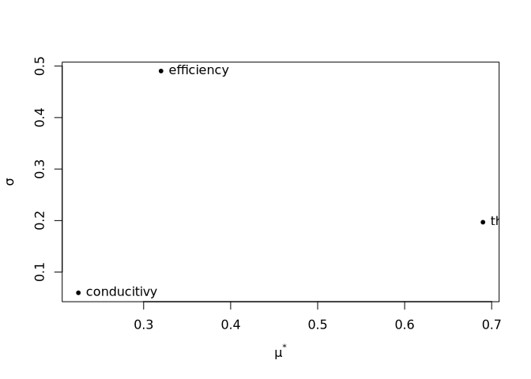
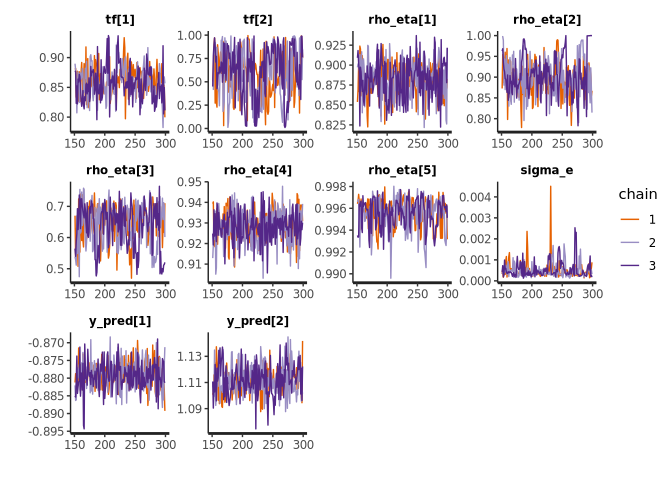
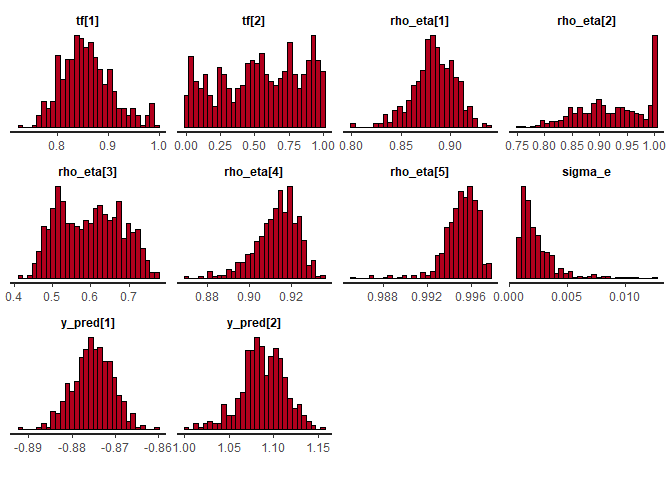

Conduct sensitivity analysis and Bayesian calibration of EnergyPlus models.

Installation
Currently, epluspar is not on CRAN. You can install the development version from GitHub.
# install.packages("remotes") remotes::install_github("ideas-lab-nus/epluspar")
Sensitivity Analysis
Basic workflow
The basic workflow is basically:
- Adding parameters for sensitivity analysis using
$param()or$apply_measure(). - Check parameter sampled values and generated parametric models using
$samples()and$models()respectively. - Run EnergyPlus simulations in parallel using
$run(). - Gather EnergyPlus simulated data using
$report_data()or$tabular_data(). - Evaluate parameter sensitivity using
$evaluate().
Examples
Create a SensitivityJob object:
# use an example file from EnergyPlus v8.8 for demonstration here path_idf <- file.path(eplusr::eplus_config(8.8)$dir, "ExampleFiles", "5Zone_Transformer.idf") path_epw <- file.path(eplusr::eplus_config(8.8)$dir, "WeatherData", "USA_CA_San.Francisco.Intl.AP.724940_TMY3.epw") # create a `SensitivityJob` class which inheris from eplusr::ParametricJob class sen <- sensi_job(path_idf, path_epw) #> Adding an object in class 'Output:SQLite' and setting its 'Option Type' to 'SimpleAndTabular' in order to create SQLite output file. #> Moving all objects in class 'Output:Meter:MeterFileOnly' to 'Output:Meter' in order to use csv for data extraction.
Set sensitivity parameters using $param() or $apply_measure().
- Using
$param()
# set parameter using similar syntax to `Idf$set()` in eplusr sen$param( # For adding a single object field as parameter # Syntax: Object = list(Field = c(Min, Max, Levels)) `Supply Fan 1` = list(Fan_Total_Efficiency = c(0.1, 1.0, 5)), # For adding a class field as parameter Material := list( Thickness = c(min = 0.01, max = 0.08, levels = 5), Conductivity = c(min = 0.01, max = 0.6, levels = 6) ), # use `.names` to give names to each parameter .names = c("efficiency", "thickness", "conductivity"), # See `r` and `grid_jump` in `sensitivity::morris` .r = 8, .grid_jump = 1 )
- Using
$apply_measure()
# first define a "measure" my_actions <- function (idf, efficiency, thickness, conducitivy) { idf$set( `Supply Fan 1` = list(Fan_Total_Efficiency = efficiency), Material := list(Thickness = thickness, Conductivity = conducitivy) ) idf } # then apply that measure with parameter space definitions as function arguments sen$apply_measure(my_actions, efficiency = c(0.1, 1.0, 5), thickness = c(0.01, 0.08, 5), conducitivy = c(0.1, 0.6, 6), .r = 8, .grid_jump = 1 ) #> -- EnergPlus Sensitivity Analysis Job ------------------------------------ #> * Seed: 'C:\Users\hongy\AppData\Local\EnergyPlusV8-8-0\ExampleFiles\5... #> * Weather: 'C:\Users\hongy\AppData\Local\EnergyPlusV8-8-0\WeatherData... #> * EnergyPlus Version: '8.8.0' #> * EnergyPlus Path: 'C:\Users\hongy\AppData\Local\EnergyPlusV8-8-0' #> Applied Measure: 'my_actions' #> Parameters [3] #> [1]: 'efficiency' [0.1, 1] (lvl: 5) #> [2]: 'thickness' [0.01, 0.08] (lvl: 5) #> [3]: 'conducitivy' [0.1, 0.6] (lvl: 6) #> Parametric Models [32]: #> [01]: 'Case01.idf' #> [02]: 'Case02.idf' #> [03]: 'Case03.idf' #> [04]: 'Case04.idf' #> [05]: 'Case05.idf' #> [06]: 'Case06.idf' #> [07]: 'Case07.idf' #> [08]: 'Case08.idf' #> [09]: 'Case09.idf' ....
Get samples
sen$samples() #> case efficiency thickness conducitivy #> <int> <num> <num> <num> #> 1: 1 0.325 0.0275 0.4 #> 2: 2 0.100 0.0275 0.4 #> 3: 3 0.100 0.0100 0.4 #> 4: 4 0.100 0.0100 0.3 #> 5: 5 0.100 0.0625 0.3 #> 6: 6 0.325 0.0625 0.3 #> 7: 7 0.325 0.0800 0.3 #> 8: 8 0.325 0.0800 0.4 #> 9: 9 0.100 0.0800 0.3 #> 10: 10 0.325 0.0800 0.3 #> 11: 11 0.325 0.0800 0.2 #> 12: 12 0.325 0.0625 0.2 #> 13: 13 0.100 0.0450 0.2 #> 14: 14 0.325 0.0450 0.2 #> 15: 15 0.325 0.0450 0.1 #> 16: 16 0.325 0.0625 0.1 #> 17: 17 0.550 0.0100 0.5 #> 18: 18 0.775 0.0100 0.5 ....
Run simulations and calculate statistic indicators
# run simulations in temporary directory sen$run(dir = tempdir(), echo = FALSE) #> ── EnergPlus Parametric Simulation Job ───────────────────────────────────────── #> * Seed: '/home/hongyuanjia/.local/EnergyPlus-8-8-0/ExampleFiles/5Zone_Trans... #> * Weather: '/home/hongyuanjia/.local/EnergyPlus-8-8-0/WeatherData/USA_CA_Sa... #> -- EnergPlus Sensitivity Analysis Job ------------------------------------ #> * Seed: 'C:\Users\hongy\AppData\Local\EnergyPlusV8-8-0\ExampleFiles\5... #> * Weather: 'C:\Users\hongy\AppData\Local\EnergyPlusV8-8-0\WeatherData... #> * EnergyPlus Version: '8.8.0' #> * EnergyPlus Path: 'C:\Users\hongy\AppData\Local\EnergyPlusV8-8-0' #> Applied Measure: 'my_actions' #> Parameters [3] #> [1]: 'efficiency' [0.1, 1] (lvl: 5) #> [2]: 'thickness' [0.01, 0.08] (lvl: 5) #> [3]: 'conducitivy' [0.1, 0.6] (lvl: 6) #> Parametric Models [32]: #> [01]: 'Case01.idf' <-- SUCCEEDED #> [02]: 'Case02.idf' <-- SUCCEEDED #> [03]: 'Case03.idf' <-- SUCCEEDED #> [04]: 'Case04.idf' <-- SUCCEEDED #> [05]: 'Case05.idf' <-- SUCCEEDED #> [06]: 'Case06.idf' <-- SUCCEEDED #> [07]: 'Case07.idf' <-- SUCCEEDED #> [08]: 'Case08.idf' <-- SUCCEEDED #> [09]: 'Case09.idf' <-- SUCCEEDED .... # extract output # here is just am example eng <- sen$tabular_data(table_name = "site and source energy", column_name = "energy per total building area", row_name = "total site energy")[, as.numeric(value)] # calculate sensitivity (result <- sen$evaluate(eng)) #> #> Call: #> sensitivity::morris(model = NULL, factors = l$param$param_name, r = .r, design = list(type = "oat", levels = l$param$levels, grid.jump = .grid_jump), binf = l$param$min, bsup = l$param$max, scale = .scale) #> #> Model runs: 32 #> mu mu.star sigma #> efficiency -0.88000 0.88000 0.80796040 #> thickness -0.51000 0.51000 0.36893670 #> conducitivy 0.16875 0.16875 0.09613049 # extract data attr(result, "data") #> index name mu mu.star sigma #> <int> <char> <num> <num> <num> #> 1: 1 efficiency -0.88000 0.88000 0.80796040 #> 2: 2 thickness -0.51000 0.51000 0.36893670 #> 3: 3 conducitivy 0.16875 0.16875 0.09613049
Plot
# plot plot(result)

Bayesian Calibration
Basic workflow
- Setting input and output variables using
$input()and$output()respectively. Input variables should be variables listed in RDD while output variables should be variables listed in RDD and MDD. - Adding parameters to calibrate using
$param()or$apply_measure(). - Check parameter sampled values and generated parametric models using
$samples()and$models()respectively. - Run EnergyPlus simulations in parallel using
$eplus_run(). - Gather simulated data of input and output parameters using
$data_sim(). - Specify field measured data of input and output parameters using
$data_field(). - Specify field measured data of input and output parameters using
$data_field(). - Specify input data for Stan for Bayesian calibration using
$data_bc(). - Run bayesian calibration and get predictions using stan using
$stan_run().
Examples
Create a BayesCalibJob object:
# use an example file from EnergyPlus v8.8 for demonstration here path_idf <- file.path(eplusr::eplus_config(8.8)$dir, "ExampleFiles", "RefBldgLargeOfficeNew2004_Chicago.idf") path_epw <- file.path(eplusr::eplus_config(8.8)$dir, "WeatherData", "USA_CA_San.Francisco.Intl.AP.724940_TMY3.epw") # create a `SensitivityJob` class which inherits from eplusr::ParametricJob class bc <- bayes_job(path_idf, path_epw)
Get RDD and MDD
$read_rdd() and $read_mdd() can be used to get RDD and MDD for current seed model.
(rdd <- bc$read_rdd()) #> Initializing RDD... #> Initializing RDD... [SUCCESSFUL] #> == EnergyPlus Report Data Dictionary File ================================ #> * EnergyPlus version: 8.8.0 (7c3bbe4830) #> * Simulation started: 2020-09-10 18:55:00 #> #> -- Details --------------------------------------------------------------- #> index reported_time_step report_type #> <int> <char> <char> #> 1: 1 Zone Average #> 2: 2 Zone Average #> 3: 3 Zone Average #> 4: 4 Zone Average #> 5: 5 Zone Average #> --- #> 616: 616 HVAC Average #> 617: 617 HVAC Sum #> 618: 618 HVAC Average #> 619: 619 HVAC Sum #> 620: 620 HVAC Average #> variable #> <char> .... (mdd <- bc$read_mdd()) #> == EnergyPlus Meter Data Dictionary File ================================= #> * EnergyPlus version: 8.8.0 (7c3bbe4830) #> * Simulation started: 2020-09-10 18:55:00 #> #> -- Details --------------------------------------------------------------- #> index reported_time_step report_type #> <int> <char> <char> #> 1: 1 Zone Meter #> 2: 2 Zone Meter #> 3: 3 Zone Meter #> 4: 4 Zone Meter #> 5: 5 Zone Meter #> --- #> 173: 173 Zone Meter #> 174: 174 Zone Meter #> 175: 175 Zone Meter #> 176: 176 Zone Meter #> 177: 177 Zone Meter #> variable units #> <char> <char> ....
Setting Input and Output Variables
Input variables and output variables can be set by using $input() and $output(), respectively. For $input(), only variables listed in RDD are supported. For $output(), variables listed in RDD and MDD are both supported.
By default, they are all empty and $input(), $output() will return NULL.
bc$input() #> NULL bc$output() #> NULL bc$models() #> Unable to create parametric models because input variables are not set. Please use '$input()' to set input variables. #> NULL
You can specify input and output parameters using RddFile, MddFile and data.frames.
# using RDD and MDD bc$input(rdd[1:3]) #> index class key_value variable_name #> <int> <char> <char> <char> #> 1: 1 Output:Variable * Site Outdoor Air Drybulb Temperature #> 2: 2 Output:Variable * Site Outdoor Air Dewpoint Temperature #> 3: 3 Output:Variable * Site Outdoor Air Wetbulb Temperature #> reporting_frequency #> <char> #> 1: Timestep #> 2: Timestep #> 3: Timestep bc$output(mdd[1]) #> index class key_value variable_name reporting_frequency #> <int> <char> <char> <char> <char> #> 1: 1 Output:Meter <NA> Electricity:Facility Timestep # using data.frame bc$input(eplusr::rdd_to_load(rdd[1:3])) #> index class key_value variable_name #> <int> <char> <char> <char> #> 1: 1 Output:Variable * Site Outdoor Air Drybulb Temperature #> 2: 2 Output:Variable * Site Outdoor Air Dewpoint Temperature #> 3: 3 Output:Variable * Site Outdoor Air Wetbulb Temperature #> reporting_frequency #> <char> #> 1: Timestep #> 2: Timestep #> 3: Timestep bc$output(eplusr::mdd_to_load(mdd[1])) #> index class key_value variable_name reporting_frequency #> <int> <char> <char> <char> <char> #> 1: 1 Output:Meter <NA> Electricity:Facility Timestep
You can set append to NULL to remove all existing input and output parameters.
bc$input(append = NULL) #> NULL bc$output(append = NULL) #> NULL
You can also directly specify variable names:
bc$input("CoolSys1 Chiller 1", paste("chiller evaporator", c("inlet temperature", "outlet temperature", "mass flow rate")), "hourly") #> index class key_value #> <int> <char> <char> #> 1: 1 Output:Variable CoolSys1 Chiller 1 #> 2: 2 Output:Variable CoolSys1 Chiller 1 #> 3: 3 Output:Variable CoolSys1 Chiller 1 #> variable_name reporting_frequency #> <char> <char> #> 1: Chiller Evaporator Inlet Temperature Hourly #> 2: Chiller Evaporator Outlet Temperature Hourly #> 3: Chiller Evaporator Mass Flow Rate Hourly bc$output("CoolSys1 Chiller 1", "chiller electric power", "hourly") #> index class key_value variable_name #> <int> <char> <char> <char> #> 1: 1 Output:Variable CoolSys1 Chiller 1 Chiller Electric Power #> reporting_frequency #> <char> #> 1: Hourly
Note that variable cannot be set as both an input and output variable.
bc$output("CoolSys1 Chiller 1", name = "chiller evaporator inlet temperature", reporting_frequency = "hourly") #> Error: Variables specified have already been set as input: 'CoolSys1 Chiller 1:Chiller Evaporator Inlet Temperature'
Also, note that input and output variables should have the same reporting frequency.
bc$output(mdd[1], reporting_frequency = "daily") #> Error: Object specified does not have the same reporting frequency as existing input ('Hourly'). Invalid input reporting frequency: 'daily'
For $output(), both variables in RDD and MDD are supported. However, for $input(), only variables in RDD are allowed.
Adding Parameters to Calibrate
Similarly like SensitivityJob, parameters can be added using either $param() or $apply_measure().
Here use $param() for demonstration. Basically there are 3 format of defining a parameter:
-
object = list(field1 = c(min, max), field2 = c(min, max), ...)This is the basic format.
field1andfield2inobjectwill be added as two different parameters, with minimum and maximum value specified asminandmax. -
class := list(field1 = c(min, max), field2 = c(min, max), ...)This is useful when you want to treat
field1andfield2in all objects inclassas two different parameters. Please note the use of special notion of:=instead of=. -
.(objects) := list(field1 = c(min, max), field2 = c(min, max), ...)Sometimes you may not want to treat a field in all objects in a class but only a subset of objects. You can use a special notation on the left hand side
.(). In the parentheses can be object names or IDs.
bc$param( `CoolSys1 Chiller 1` = list(reference_cop = c(4, 6), reference_capacity = c(2.5e6, 3.0e6)), .names = c("cop1", "cap1"), .num_sim = 5 ) #> -- EnergPlus Parametric Simulation Job ----------------------------------- #> * Seed: 'C:\Users\hongy\AppData\Local\EnergyPlusV8-8-0\ExampleFiles\R... #> * Weather: 'C:\Users\hongy\AppData\Local\EnergyPlusV8-8-0\WeatherData... #> * EnergyPlus Version: '8.8.0' #> * EnergyPlus Path: 'C:\Users\hongy\AppData\Local\EnergyPlusV8-8-0' #> Applied Measure: '' #> Parametric Models [5]: #> [1]: 'Case1.idf' #> [2]: 'Case2.idf' #> [3]: 'Case3.idf' #> [4]: 'Case4.idf' #> [5]: 'Case5.idf' #> << Job has not been run before >>
Getting Sample Values and Parametric Models
Parameter values can be retrieved using $samples().
bc$samples() #> case cop1 cap1 #> <int> <num> <num> #> 1: 1 5.568475 2581922 #> 2: 2 4.806140 2875407 #> 3: 3 4.794320 2753627 #> 4: 4 4.145201 2628566 #> 5: 5 5.923980 2946315
Generated Idfs can be retrieved using $models().
names(bc$models()) #> [1] "Case1" "Case2" "Case3" "Case4" "Case5"
Run simulations and gather data
$eplus_run() runs all parametric models in parallel. Parameter run_period can be given to insert a new RunPeriod object. In this case, all existing RunPeriod objects in the seed model will be commented out.
bc$eplus_run(dir = tempdir(), run_period = list("example", 7, 1, 7, 3), echo = FALSE) #> Reset 'Run Simulation for Weather File Run Periods' in 'SimulationControl' from 'No' to 'Yes' to make sure input run period can take effect. #> Reset 'Run Simulation for Weather File Run Periods' in 'SimulationControl' from 'No' to 'Yes' to make sure input run period can take effect. #> Reset 'Run Simulation for Weather File Run Periods' in 'SimulationControl' from 'No' to 'Yes' to make sure input run period can take effect. #> Reset 'Run Simulation for Weather File Run Periods' in 'SimulationControl' from 'No' to 'Yes' to make sure input run period can take effect. #> Reset 'Run Simulation for Weather File Run Periods' in 'SimulationControl' from 'No' to 'Yes' to make sure input run period can take effect. #> ── EnergPlus Parametric Simulation Job ───────────────────────────────────────── #> * Seed: '/home/hongyuanjia/.local/EnergyPlus-8-8-0/ExampleFiles/RefBldgLarg... #> * Weather: '/home/hongyuanjia/.local/EnergyPlus-8-8-0/WeatherData/USA_CA_Sa... #> -- EnergPlus Parametric Simulation Job ----------------------------------- #> * Seed: 'C:\Users\hongy\AppData\Local\EnergyPlusV8-8-0\ExampleFiles\R... #> * Weather: 'C:\Users\hongy\AppData\Local\EnergyPlusV8-8-0\WeatherData... #> * EnergyPlus Version: '8.8.0' #> * EnergyPlus Path: 'C:\Users\hongy\AppData\Local\EnergyPlusV8-8-0' #> Applied Measure: '' #> Parametric Models [5]: #> [1]: 'Case1.idf' <-- SUCCEEDED #> [2]: 'Case2.idf' <-- SUCCEEDED #> [3]: 'Case3.idf' <-- SUCCEEDED #> [4]: 'Case4.idf' <-- SUCCEEDED #> [5]: 'Case5.idf' <-- SUCCEEDED #> Simulation started at '2020-09-10 18:55:43' and completed successfully after 13.28 secs.
$data_sim() returns a data.table (when merge is TRUE) or a list of 2 data.table (when merge is FALSE) which contains the simulated data of input and output parameters. These data will be stored internally and used during Bayesian calibration using Stan.
The resolution parameter can be used to specify the time resolution of returned data. Note that input time resolution cannot be smaller than the reporting frequency, otherwise an error will be issued.
bc$data_sim("1 min") #> Error: Input resolution should not be smaller than reporting frequency (1 hour). Invalid resolution found: '1 min'
bc$data_sim("6 hour") #> $input #> case Date/Time #> <int> <char> #> 1: 1 07/01 06:00 #> 2: 1 07/01 12:00 #> 3: 1 07/01 18:00 #> 4: 1 07/01 24:00 #> 5: 1 07/02 06:00 #> 6: 1 07/02 12:00 #> 7: 1 07/02 18:00 #> 8: 1 07/02 24:00 #> 9: 1 07/03 06:00 #> 10: 1 07/03 12:00 #> 11: 1 07/03 18:00 #> 12: 1 07/03 24:00 #> 13: 2 07/01 06:00 #> 14: 2 07/01 12:00 #> 15: 2 07/01 18:00 #> 16: 2 07/01 24:00 #> 17: 2 07/02 06:00 ....
Specify Measured Data
$data_field() takes a data.frame of measured value of output parameters and returns a list of data.tables which contains the measured value of input and output parameters, and newly measured value of input if applicable.
For input parameters, the values of simulation data for the first case are directly used as the measured values.
For demonstration, we use the seed model to generate fake measured output data.
# clone the seed model seed <- bc$seed()$clone() # remove existing RunPeriod objects seed$RunPeriod <- NULL # set run period as the same as in `$eplus_run()` seed$add(RunPeriod = list("test", 7, 1, 7, 3)) #> $test #> <IdfObject: 'RunPeriod'> [ID:846] `test` #> Class: <RunPeriod> #> +- 01 : "test", !- Name #> |- 02*: 7, !- Begin Month #> |- 03*: 1, !- Begin Day of Month #> |- 04*: 7, !- End Month #> |- 05*: 3, !- End Day of Month #> |- 06 : "UseWeatherFile", !- Day of Week for Start Day #> |- 07 : "Yes", !- Use Weather File Holidays and Special Da... #> |- 08 : "Yes", !- Use Weather File Daylight Saving Period #> |- 09 : "No", !- Apply Weekend Holiday Rule #> |- 10 : "Yes", !- Use Weather File Rain Indicators #> \- 11 : "Yes"; !- Use Weather File Snow Indicators seed$SimulationControl$set( `Run Simulation for Sizing Periods` = "No", `Run Simulation for Weather File Run Periods` = "Yes" ) #> <IdfObject: 'SimulationControl'> [ID:2] #> Class: <SimulationControl> #> +- 1: "YES", !- Do Zone Sizing Calculation #> |- 2: "YES", !- Do System Sizing Calculation #> |- 3: "YES", !- Do Plant Sizing Calculation #> |- 4: "No", !- Run Simulation for Sizing Periods #> |- 5: "Yes", !- Run Simulation for Weather File Run Periods #> |- 6: "YES", !- Do HVAC Sizing Simulation for Sizing Periods #> \- 7: 2; !- Maximum Number of HVAC Sizing Simulation Passes # save the model to tempdir seed$save(tempfile(fileext = ".idf")) # run job <- seed$run(bc$weather(), echo = FALSE) # get output data fan_power <- epluspar:::report_dt_aggregate(job$report_data(name = bc$output()$variable_name, all = TRUE, day_type = "normalday"), "6 hour") fan_power <- epluspar:::report_dt_to_wide(fan_power) # add Gaussian noice fan_power <- fan_power[, -"Date/Time"][ , lapply(.SD, function (x) x + rnorm(length(x), sd = 0.05 * sd(x)))][ , lapply(.SD, function (x) {x[x < 0] <- 0; x}) ] # set field data bc$data_field(fan_power) #> $input #> case Date/Time #> <int> <char> #> 1: NA 07/01 06:00 #> 2: NA 07/01 12:00 #> 3: NA 07/01 18:00 #> 4: NA 07/01 24:00 #> 5: NA 07/02 06:00 #> 6: NA 07/02 12:00 #> 7: NA 07/02 18:00 #> 8: NA 07/02 24:00 #> 9: NA 07/03 06:00 #> 10: NA 07/03 12:00 #> 11: NA 07/03 18:00 #> 12: NA 07/03 24:00 #> COOLSYS1 CHILLER 1:Chiller Evaporator Inlet Temperature [C](6 Hour) #> <num> #> 1: 8.186813 #> 2: 8.065758 #> 3: 8.195386 ....
Specify Input Data for Stan
$data_bc() takes a list of field data and simulated data, and returns a list that contains data input for Bayesian calibration using the Stan model
-
n: Number of measured parameter observations. -
m: Number of simulated observations. -
p: Number of input parameters. -
q: Number of calibration parameters. -
yf: Data of measured output after z-score standardization using data of simulated output. -
yc: Data of simulated output after z-score standardization. -
xf: Data of measured input after min-max normalization. -
xc: Data of simulated input after min-max normalization. -
tc: Data of calibration parameters after min-max normalization.
str(bc$data_bc()) #> List of 11 #> $ n : int 12 #> $ n_pred: int 12 #> $ m : int 60 #> $ p : int 3 #> $ q : int 2 #> $ yf : num [1:12] -0.879 1.111 1.498 -0.848 -0.879 ... #> $ yc : num [1:60] -0.876 1.149 1.648 -0.879 -0.879 ... #> $ xf :Classes 'data.table' and 'data.frame': 12 obs. of 3 variables: #> ..$ COOLSYS1 CHILLER 1:Chiller Evaporator Inlet Temperature [C](6 Hour) : num [1:12] 0.251854 0.000112 0.269682 0.25723 0.25723 ... #> ..$ COOLSYS1 CHILLER 1:Chiller Evaporator Outlet Temperature [C](6 Hour): num [1:12] 0.816 0 0.0627 0.8792 0.8792 ... #> ..$ COOLSYS1 CHILLER 1:Chiller Evaporator Mass Flow Rate [kg/s](6 Hour) : num [1:12] 0.00247 0.87075 1 0 0 ... #> ..- attr(*, ".internal.selfref")=<externalptr> #> $ xc :Classes 'data.table' and 'data.frame': 60 obs. of 3 variables: #> ..$ COOLSYS1 CHILLER 1:Chiller Evaporator Inlet Temperature [C](6 Hour) : num [1:60] 0.251854 0.000112 0.269682 0.25723 0.25723 ... #> ..$ COOLSYS1 CHILLER 1:Chiller Evaporator Outlet Temperature [C](6 Hour): num [1:60] 0.816 0 0.0627 0.8792 0.8792 ... #> ..$ COOLSYS1 CHILLER 1:Chiller Evaporator Mass Flow Rate [kg/s](6 Hour) : num [1:60] 0.00247 0.87075 1 0 0 ... #> ..- attr(*, ".internal.selfref")=<externalptr> #> $ x_pred:Classes 'data.table' and 'data.frame': 12 obs. of 3 variables: #> ..$ COOLSYS1 CHILLER 1:Chiller Evaporator Inlet Temperature [C](6 Hour) : num [1:12] 0.251854 0.000112 0.269682 0.25723 0.25723 ... ....
You can also supply your own field data and simulated data and using $data_bc() to construct the input for the Stan model. Input data_field and data_sim should have the same structure as the output from $data_field() and $data_sim(). If data_field and data_sim is not specified, the output from $data_field() and $data_sim() will be used.
Get Stan file
You can save the internal Stan code using $stan_file(). If no path is specified, a character vector that contains the stan code will be returned.
bc$stan_file() #> [1] "/*" #> [2] " The MIT License (MIT)" #> [3] "" #> [4] " Copyright (c) 2019-2020 Hongyuan Jia and Adrian Chong" #> [5] "" #> [6] " Permission is hereby granted, free of charge, to any person obtaining a copy" #> [7] " of this software and associated documentation files (the \"Software\"), to deal" #> [8] " in the Software without restriction, including without limitation the rights" #> [9] " to use, copy, modify, merge, publish, distribute, sublicense, and/or sell" #> [10] " copies of the Software, and to permit persons to whom the Software is" #> [11] " furnished to do so, subject to the following conditions:" #> [12] "" #> [13] " The above copyright notice and this permission notice shall be included in" #> [14] " all copies or substantial portions of the Software." #> [15] "" #> [16] " THE SOFTWARE IS PROVIDED \"AS IS\", WITHOUT WARRANTY OF ANY KIND, EXPRESS OR" #> [17] " IMPLIED, INCLUDING BUT NOT LIMITED TO THE WARRANTIES OF MERCHANTABILITY," #> [18] " FITNESS FOR A PARTICULAR PURPOSE AND NONINFRINGEMENT. IN NO EVENT SHALL THE" #> [19] " AUTHORS OR COPYRIGHT HOLDERS BE LIABLE FOR ANY CLAIM, DAMAGES OR OTHER" #> [20] " LIABILITY, WHETHER IN AN ACTION OF CONTRACT, TORT OR OTHERWISE, ARISING FROM," ....
Run Bayesian Calibration Using Stan
You can run Bayesian calibration using Stan using $stan_run().
If data argument is not specified, the output of $data_bc() is directly used.
options(mc.cores = parallel::detectCores()) bc$stan_run(iter = 300, chains = 3)
Instead of using builtin Stan model, you can also provide your own Stan code using file argument.
bc$stan_run(file = bc$stan_file(tempfile(fileext = ".stan")), iter = 300, chains = 3)
You can also use custom data set
res <- bc$stan_run(data = bc$data_bc(), iter = 300, chains = 3) #> Warning: The largest R-hat is NA, indicating chains have not mixed. #> Running the chains for more iterations may help. See #> http://mc-stan.org/misc/warnings.html#r-hat #> Warning: Bulk Effective Samples Size (ESS) is too low, indicating posterior means and medians may be unreliable. #> Running the chains for more iterations may help. See #> http://mc-stan.org/misc/warnings.html#bulk-ess #> Warning: Tail Effective Samples Size (ESS) is too low, indicating posterior variances and tail quantiles may be unreliable. #> Running the chains for more iterations may help. See #> http://mc-stan.org/misc/warnings.html#tail-ess
The stan model is store in fit
rstan::stan_trace(res$fit) #> 'pars' not specified. Showing first 10 parameters by default.

rstan::stan_hist(res$fit) #> 'pars' not specified. Showing first 10 parameters by default. #> `stat_bin()` using `bins = 30`. Pick better value with `binwidth`.

The predicted values is stored in y_pred.
str(res$y_pred) #> Classes 'data.table' and 'data.frame': 5400 obs. of 8 variables: #> $ index : int 1 1 1 1 1 1 1 1 1 1 ... #> $ sample : int 1 2 3 4 5 6 7 8 9 10 ... #> $ Date/Time : chr " 07/01 06:00" " 07/01 06:00" " 07/01 06:00" " 07/01 06:00" ... #> $ COOLSYS1 CHILLER 1:Chiller Evaporator Inlet Temperature [C](6 Hour) : num 8.19 8.19 8.19 8.19 8.19 ... #> $ COOLSYS1 CHILLER 1:Chiller Evaporator Outlet Temperature [C](6 Hour): num 8.08 8.08 8.08 8.08 8.08 ... #> $ COOLSYS1 CHILLER 1:Chiller Evaporator Mass Flow Rate [kg/s](6 Hour) : num 0.0683 0.0683 0.0683 0.0683 0.0683 ... #> $ COOLSYS1 CHILLER 1:Chiller Electric Power [W](6 Hour) : num 0 0 0 0 0 0 0 0 0 0 ... #> $ COOLSYS1 CHILLER 1:Chiller Electric Power [W](6 Hour) [Prediction] : num -65.3 56.4 -67.2 -23.1 83.5 ... #> - attr(*, ".internal.selfref")=<externalptr>